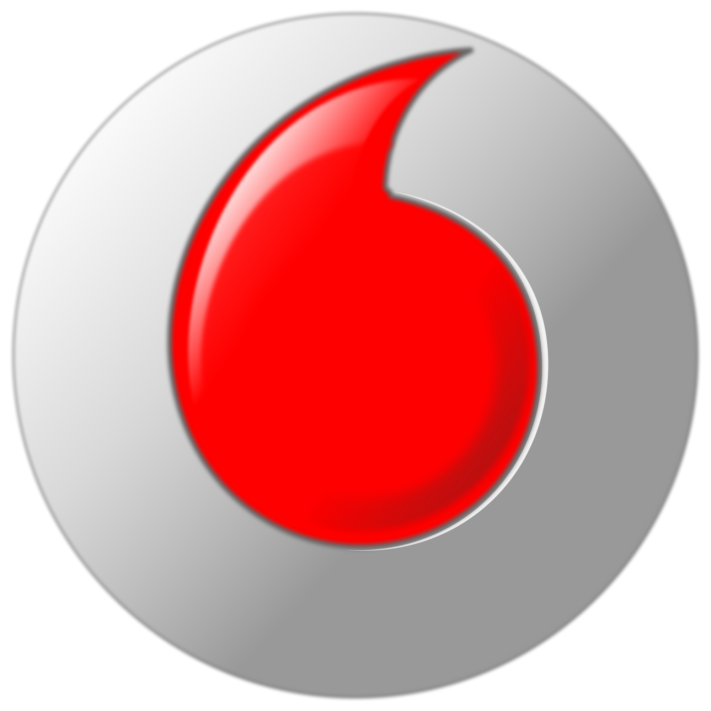

Сотрудники кафедры хирургии Донецкого медицинского университета , ведущие прием и выполняющие хирургические вмешательства на базе Университетской хирургической клиники:
Гюльмамедов Полад Фарманович
доктор медицинских наук
профессор хирургической клиники Донецкого медицинского университета
врач–хирург, хирург-проктолог
стаж работы – 20 лет
(050) 500-60-53
Жариков Станислав Олегович
кандидат медицинских наук
доцент хирургической клиники Донецкого медицинского университета
врач–хирург
стаж работы – 10 лет
(095) 244-27-24
Юдин Олег Иванович
кандидат медицинских наук
ассистент клиники детской хирургии
детский хирург
(050) 054-09-51
Консультативный прием осуществляется по адресу:
г. Краматорск ул. Вознесенского, 17, медицинский центр "Диагностика"
(050) 422-23-57
Операции выполняются в хирургическом отделении на базе кафедры хирургии № 1 в ЦГБ г. Дружковка.
Клиника оснащена современным оборудованием, перевезенным из Донецка.